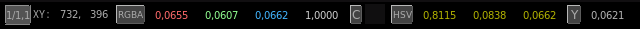

La Barra de Pixel

La barra de pixel contiene información útil sobre el pixel activo bajo el ratón, junto con el factor de zoom usado para mostrar la imagen.
El rectángulo x1
muestra el factor de zoom actual.
Junto a él estan las coordenadas X y
Y de la posición actual del ratón.
Luego viene el valor de color de pixel actual como RGBA de coma flotante o como 8 bits o como 8 bits hexadecimal.
Junto al display de color esta el desplegable de valores pixel. Este menu desplegable le permite seleccionar que valores de pixels son mostrados globalmente. Las opciones son:
* Completo: valores de pixel con gamma, gain y lut.
* Gamma: valores de pixel con gamma y gain pero sin lut.
* Original: valores de pixel sin gama, gain or lut.
Luego viene el valor de pixel en HSV (Hue -tinte-,
Saturación, Valor). Podes seleccionarlo para que te muestre:
HSL (Hue, Saturation, Luminance)
CIE XYZ
CIE xyY
CIELab L*a*b
CIELuv L*u*vYUV Pal
YDbDr Secam/PalN
YIQ NTSC
ITU-601 Digital Pal/NTSC
ITU.702 Digital HDTV
Finalmente, la Rec.709 Luminance (Y) Y = 0.2126 R + 0.7152 G + 0.772 B
del pixel es también mostrada.
Puedes cambiarla para mostrar:
Luma Y' = ( R + G + B / 3 )
Lightness L = (116 * Y ^ 1/3 ) / 100
La barra de pixel toolbar puede ser mostrada y ocultada con la tecla F2.